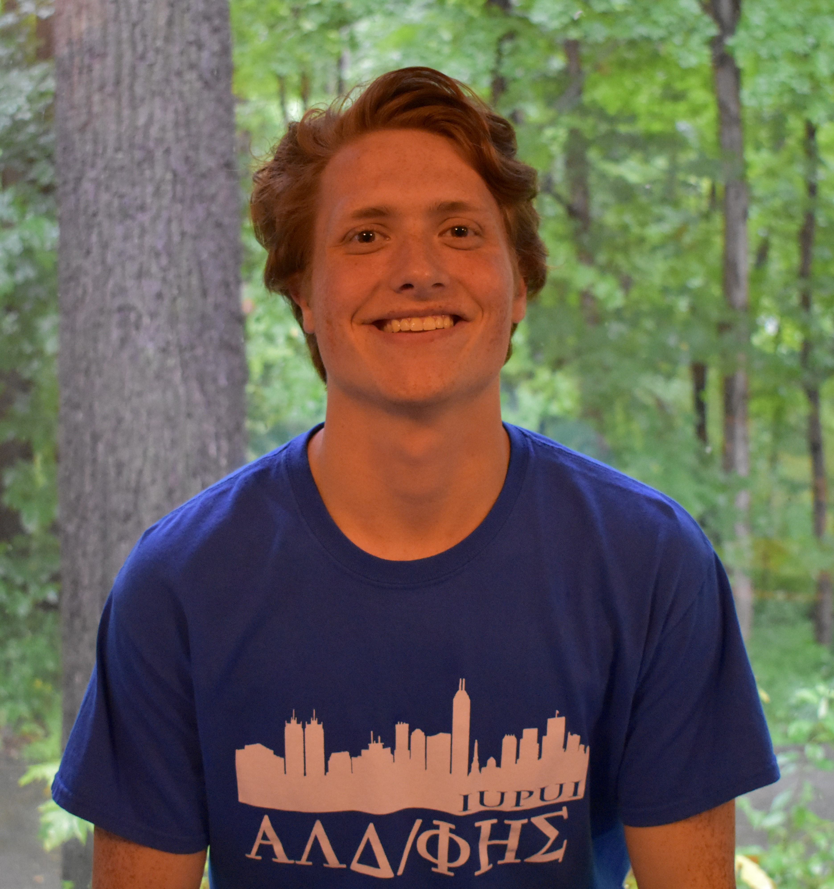
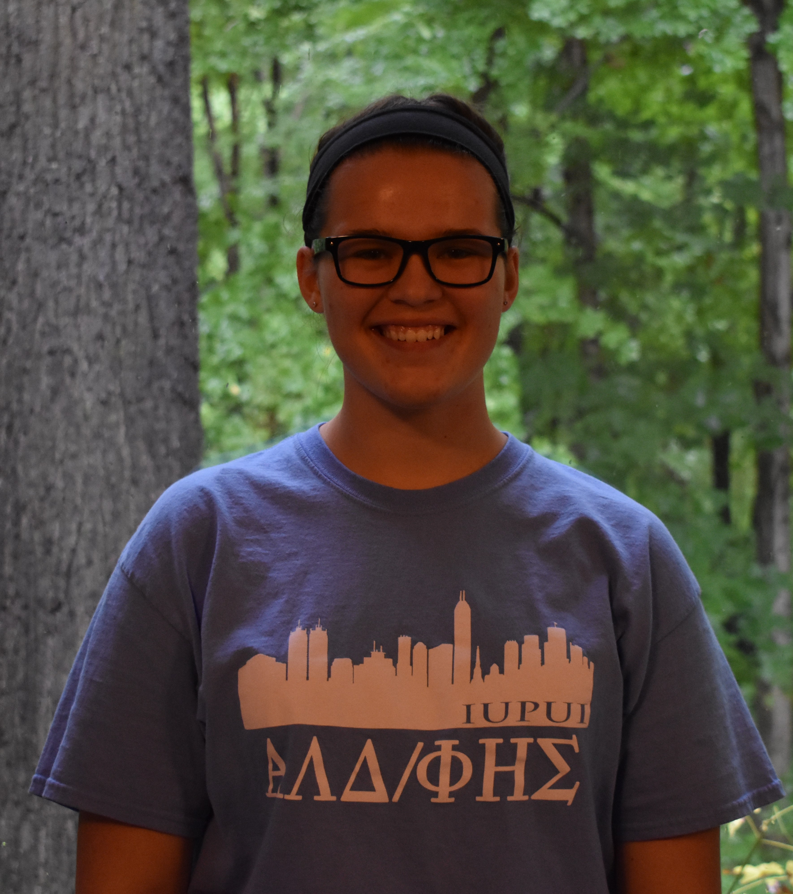
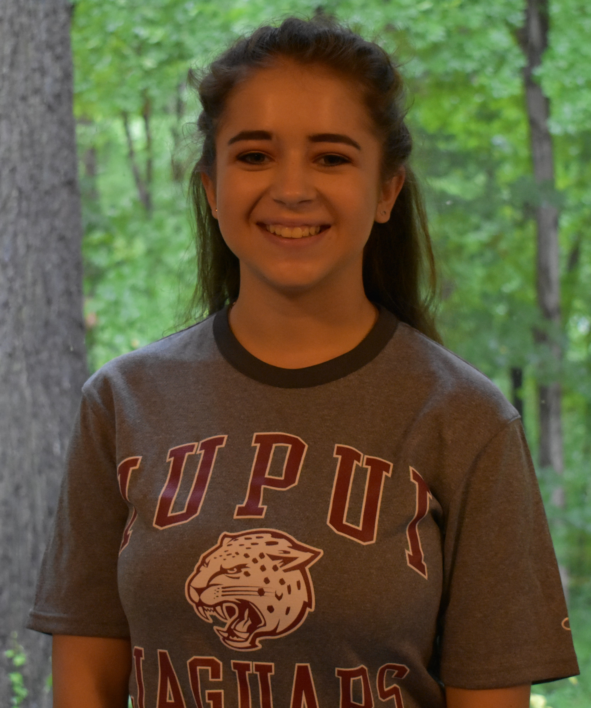
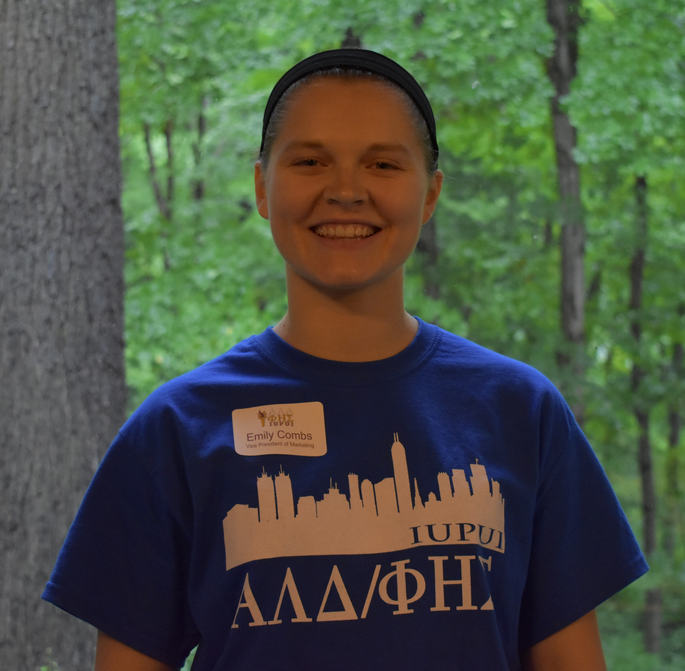
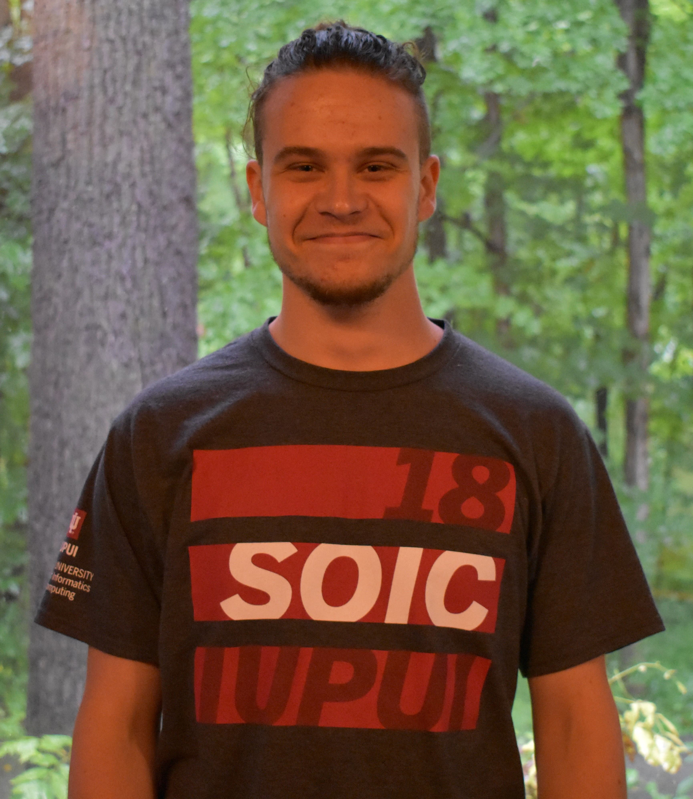

Joint National Honor Societies for High-Achieving Freshman
The Officers
Our officers work diligently to plan meetings, community service events, and social gatherings. Last spring, past officers helped Lisa Ruch (our adviser) interview and select our current officers based on their skills in leadership, organization, and teamwork. Every August, all the officers meet at Eagle Creek Hide-A-Way to brainstorm ideas for the year. They continue to meet throughout the year to coordinate additional events.

President of ALD
Collin Aycock

President of PES
Alyssa Kane

Vice President of ALD
Faith Prochaska
Vice President of PES
Katherine Roberson
Vice President of Community Relations
Angela Klunk

Vice President of Marketing
Emily Combs

Webmaster
Sarah Harris

Webmaster
Chris Jackson